Archiv – 2019
Silvester in der Gänsetränke
Wie jedes Jahr hatte die Arbeitsgemeinschaft Reileifzer Vereine wieder alle Reileifzer eingeladen, das Jahr gemeinsam ausklingen zu lassen. 42 Erwachsene und 14 Kinder feierten gemeinsam den Jahreswechsel. Die Kinder zwischen 5 und 10 Jahren waren begeistert vom großen Feuerwerk.
Jahreshauptversammlung der Feuerwehr
Die Feuerwehr Reileifzen blickte auf ein ereignisreiches Jahr zurück. Marco Eikhoff berichtete über Einsätze und Hilfeleistungen. Neuwahlen des Ortskommandos wurden einstimmig durchgeführt. Martin Eikhoff (50 Jahre) und Karl-Heinz Giesemann (70 Jahre) wurden besonders geehrt.
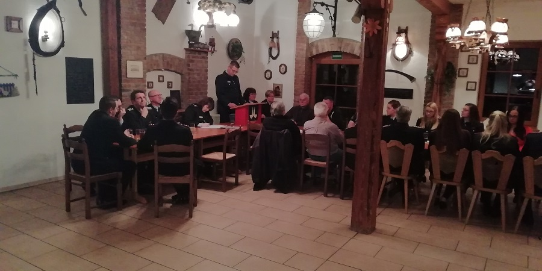
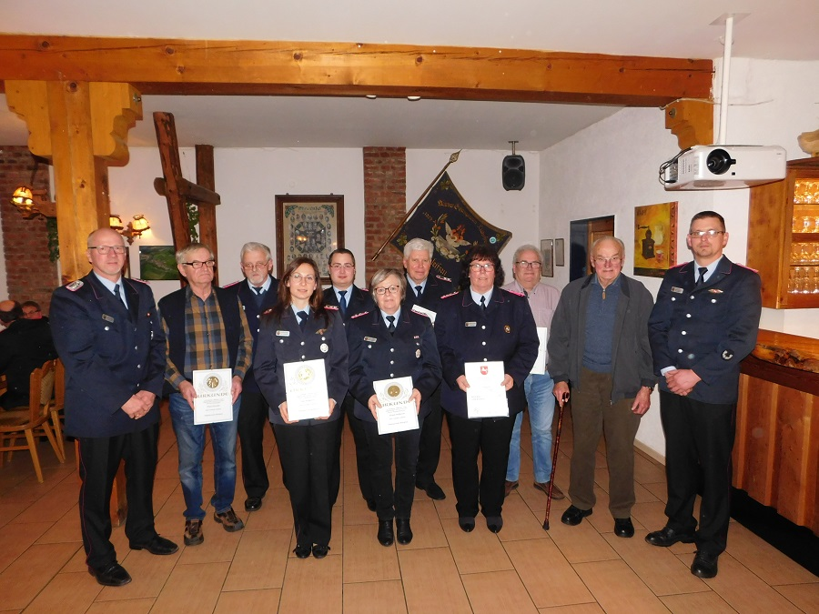
Jahreshauptversammlung vom Verkehrsverein
Der Vorsitzende Gerhard Troitzsch berichtete über Aktivitäten wie die Pflege der Wellnessoase und das Kirschblütenfest. Zahlreiche Mitglieder wurden für ihre langjährige Mitgliedschaft geehrt, darunter Ehrungen für 25, 40 und 50 Jahre.
Ostereiersuchen mit der Feuerwehr
Am Ostersonntag suchten Kinder die Osternester am Spielplatz, begleitet von strahlendem Sonnenschein.
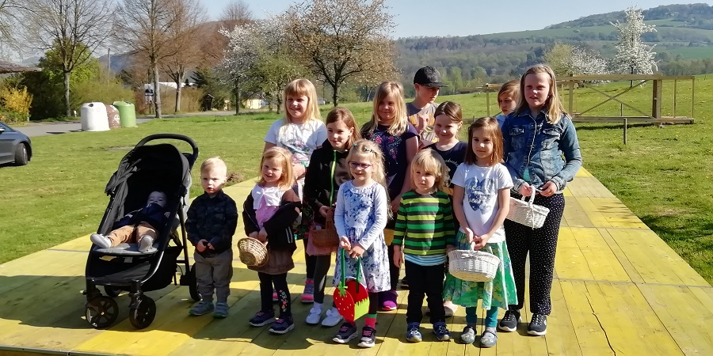
Osterfeuer in Reileifzen
Das Osterfeuer war ein voller Erfolg. Besucher genossen Currywurst, Pommes und Getränke. Gegen 21 Uhr wurde das Feuer entzündet.
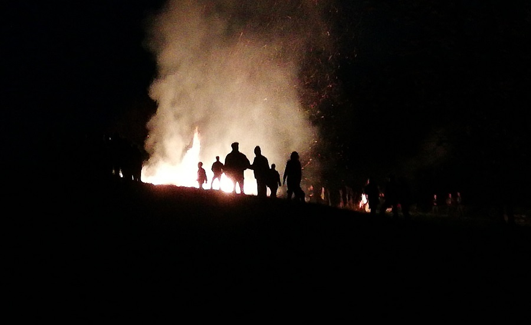
Die Wellnessoase erstrahlt im neuen Glanz
Sitzgelegenheiten an der Weser wurden ersetzt und werden bald durch kleine Tische ergänzt.
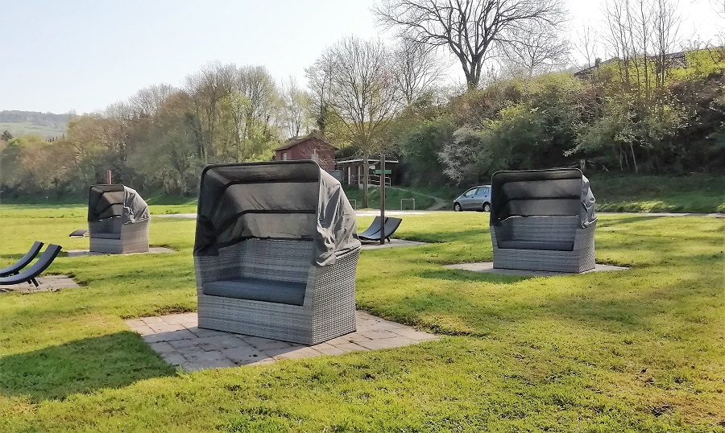
Der Flurschaden an der Weser wurde beseitigt
Pflasterflächen an der Wellnessoase wurden nach einem Unfall wieder instandgesetzt. Vielen Dank an die Firma "Pflasterbau Matthias Tacke".
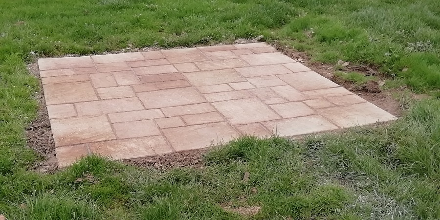
Die Bühne für das Kirschblütenfest steht
Am 13. April wurde die Bühne aufgebaut, trotz wechselhaften Wetters. Anschließend gemeinsames Grillen für alle Helfer.
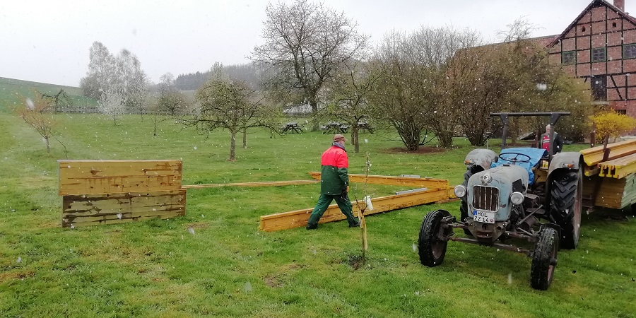
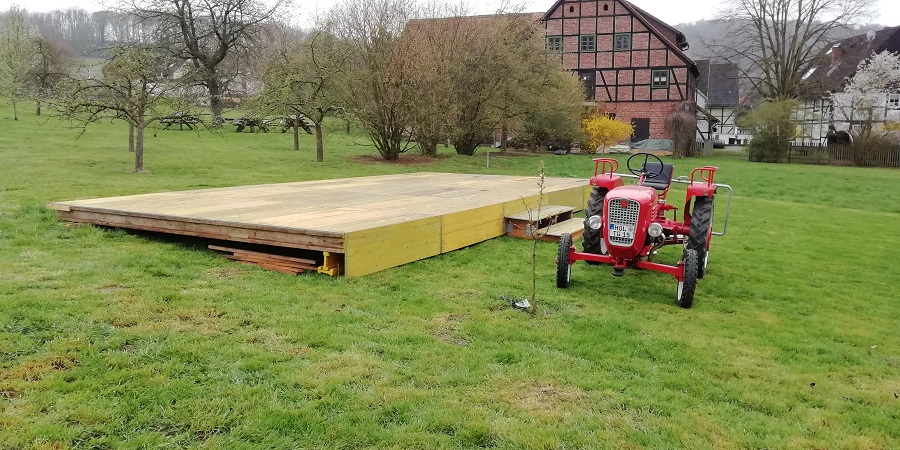
Brücke vom Anleger entfernt
Die alte Brücke zum Dampferanleger wurde stillgelegt. Die Besitzverhältnisse müssen noch geklärt werden, sodass die Brücke vorerst auf der Wiese liegt.
Umbau an der Weser
Das historische Schild schmückt jetzt die Brücke zwischen Parkplatz und Wellnessoase.
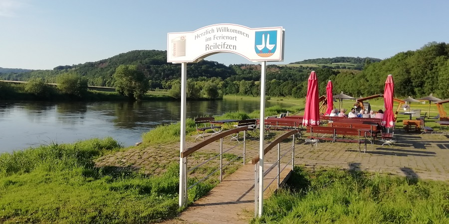
Update zur Tweete
Die Tweete bleibt bis zum Sommer gesperrt, da die Telekom den Weg für Glasfaserkabel aufnimmt. Die Brücke wird nach den Arbeiten erneuert.
Der Spielplatz brauchte Pflege
Das Schaukelgestell an der Weser wurde am 9. August instandgesetzt.
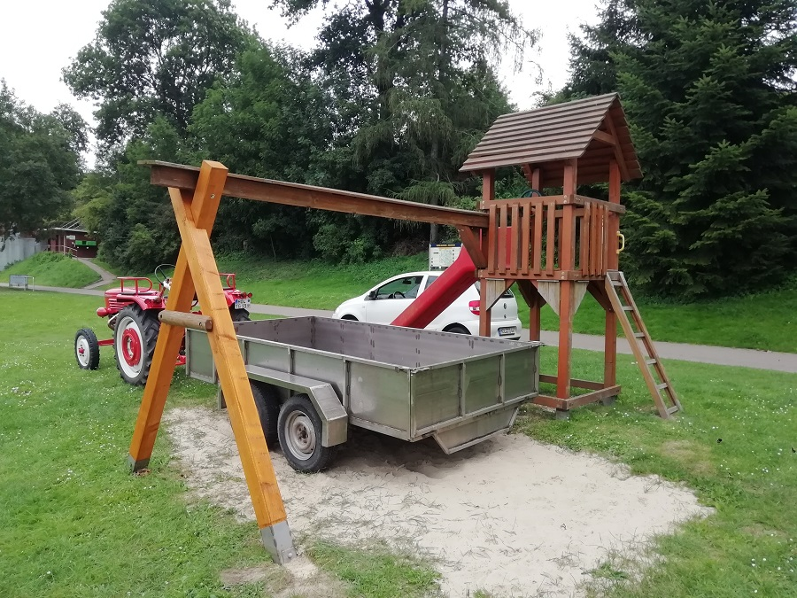
Kartoffelbraten der Feuerwehr
Am 28. September fand das Kartoffelbraten statt, trotz Regenschauer gut besucht.
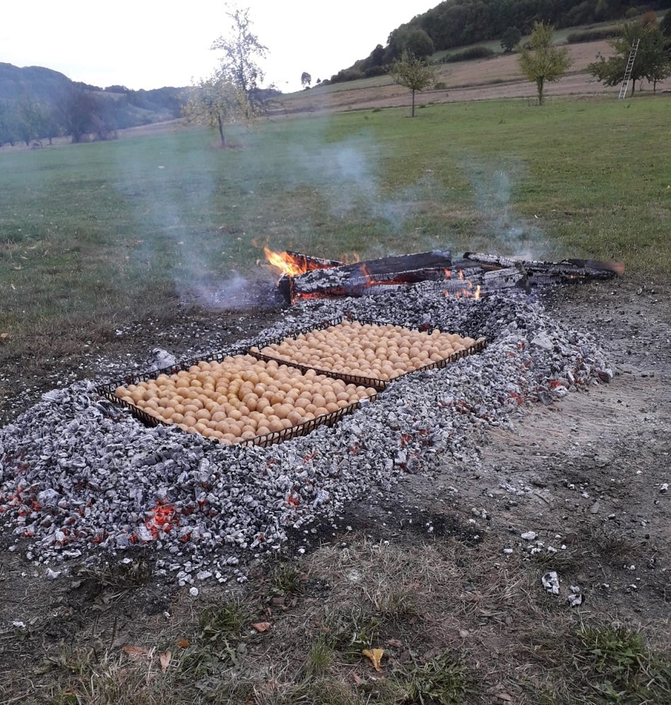
DJG Bielefeld pflanzt einen Kirschbaum
Am 28. September besuchte die DJG Bielefeld Reileifzen und pflanzte einen japanischen Kirschbaum an der Weser.
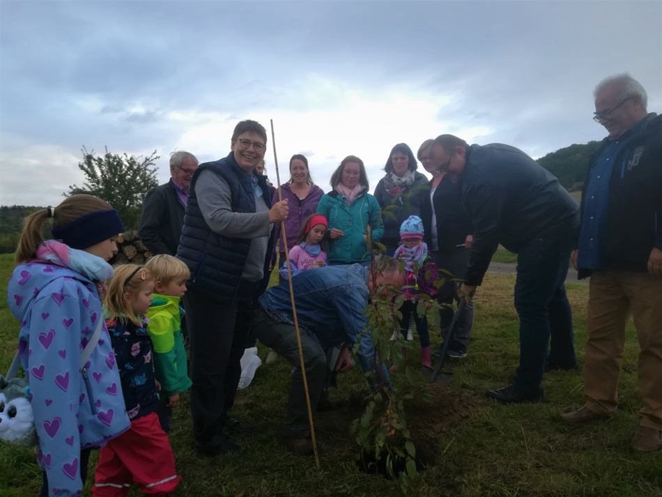
Artikel in TAH: In Reileifzen reifen japanische Kirschen
Japanreise 2019 (01.-14. Oktober)

Wellnessoase winterfest machen
Am 19. Oktober wurde die Wellnessoase abgebaut und winterfest eingelagert. Anschließend gemeinsame Brotzeit.
Laternenumzug der Feuerwehr
Am 7. November starteten die Kinder mit ihren Laternen. Begleitung durch die Jugendfeuerwehr. Danach kleine Stärkung im Gerätehaus.
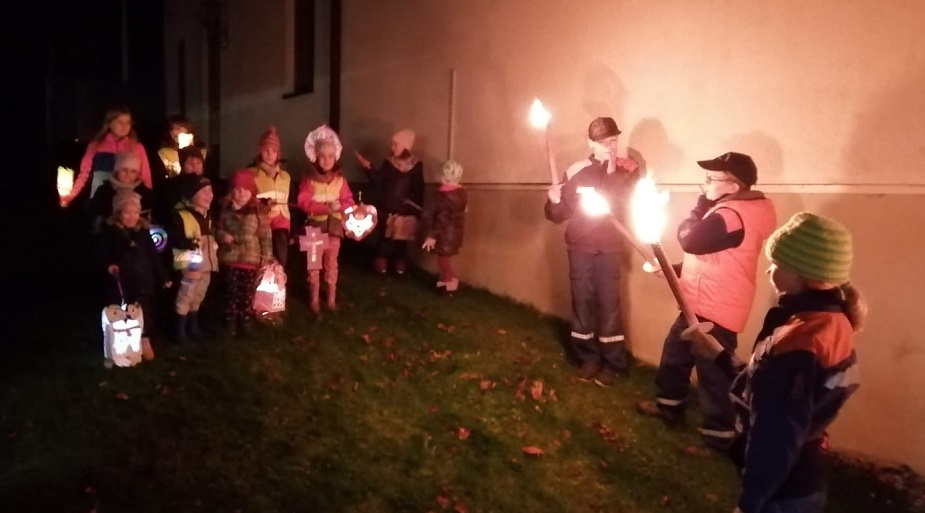